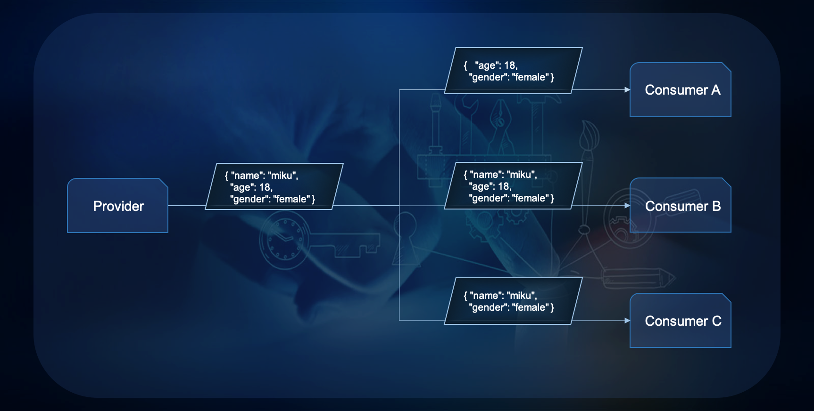
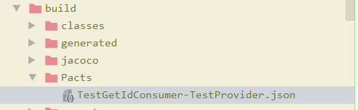
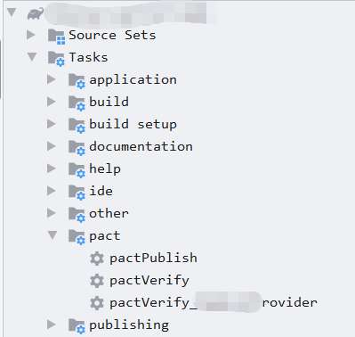
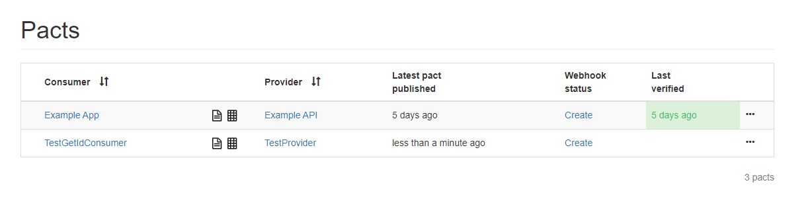
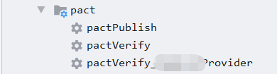
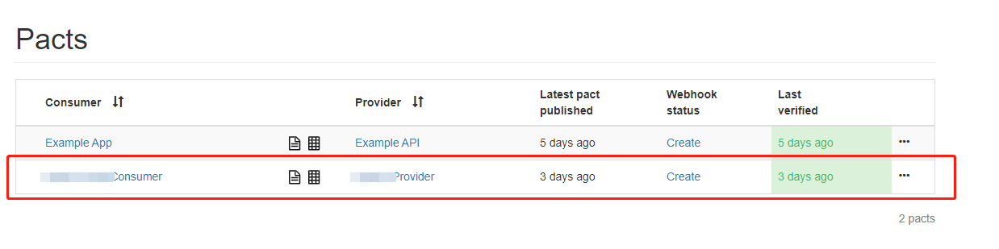

如今，契约测试已经逐渐成为测试圈中一个炙手可热的话题，特别是在微服务大行其道的行业背景下，越来越多的团队开始关注服务之间的契约及其契约测试。
关于什么是契约测试这个问题，首先先看一下Pact官方文档给出的定义：pact的官方文档，是另一个可以帮助我们理解契约测试的地方。它对契约测试给出了这样的定义："Contract testing is a way to ensure that services (such as an API provider and a client) can communicate with each other"。这里面需要关注的重点是"communicate "，它给出了Pact对契约测试范畴（scope）的定义。契约测试又称之为 消费者驱动的契约测试。这里的契约是指软件系统中各个服务间交互的数据标准格式，更多的指消费端(client)和提供端(server)之间交互的数据接口的格式。
那什么是契约测试的价值呢？要说清楚契约测试的价值，就需要准确认识契约测试的精髓——"消费者驱动"
在讨论契约测试的范畴里，”消费者驱动”述及的对象是契约，而不是契约测试。所以谁被驱动的对象就是契约。举个例子，当某个provider正常上线后，某个consumer需要消费这个provider的服务，那么应该由consumer来提出期望来建立它们之间的契约测试。因为，契约测试，形式上，虽然测试的是provider，但是在价值上，保证的却是consumer的业务。如果消费者对自己都不上心, 那你也不要指望生产者能操什么心。这些都是在跨团队的微服务体系下真切的痛点。 这里举一个契约测试的经典：

在上图一个简单的消费关系中，provider为consumer A，B，C提供服务。provider提供的结构包含name、age和gende三个简单的字段。这份包含name、age和gender的JSON，其本身只是一个schema，并不是任何契约。因为契约一定是成对存在的，没有确切consumer的交互定义，只是schema，不是契约。
如上图有三个消费者，并且消费的字段各不相同，所以这里需要有三份契约（对应的，也需要三份契约测试）。
就目前provider提供的schema来说，没有任何问题，大家相安无事。但是某日因为业务需求，consumer C期望provider提供更加详细的name信息，包括firstName和lastName。这个需求对provider是小case，所以，provider打算对schema做类似下面的修改：
这样的修改，很明显对consumer C是需要的，对consumer A无所谓，但对consumer B却是不可接受的，属于典型的契约破坏。此时，provider和consumer B之间的契约测试就会挂掉，从而对provider提出预警（至于，剩下的，怎么协调和consumer B的兼容问题，就不是契约测试关注的问题，那需要的是团队间的交流）。上面这个示例中的一些细节，可以帮助我们发掘契约测试的价值点
要最大化的体现契约测试异于集成测试的价值，一定是在"单个provider对应多个consumer"的架构下来说的。因为，在只有一个provider和一个consumer的架构下，只存在一份契约，对该契约内容的任何修改，对这对provider和consumer来说，都是显而易见的，那么就不会出现契约破坏的情况。在这种情况下，集成测试往往就已经完整的达到了契约测试的目的。
但是在单个provider对应多个consumer的架构下，情况就不一样了在上文的例子中provider和consumer C之间的契约修改，对consumer A无影响，对consumer B却是契约破坏，对这种情况，集成测试是无能为力的。在上边例子中，有4个service，所以就会有4个集成测试，每个集成测试只会关注自己的业务正确性，provider修改后，只有consumer B的集成测试会挂掉。但那都是在provider的契约破坏生效之后的事情了。可见，虽然4个集成测试都各司其职，但都不能对这个契约破坏的问题做到防患于未然！只有契约测试，才是这个问题的最佳答案！这就是契约测试最大的价值，它只会在"单provider多consumer"的环境下（这是微服务的常见场景，但不是必然场景），才能发挥出来。
真正的业务场景下，特别是一些复杂的微服务集群，又或者是一些时间跨度很长的系统，对于某个provider，到底有多少个consumer？而provider的每一处修改，又对哪些consumer的契约造成怎样的影响？这些往往都是很难确定的问题。当在集团业务中一个provider有十几个 consumer时，每次provider要更新，就得八方去通知这些consumer的团队来做回归测试。有时，一点小小的修改，回归测试一分钟就可以搞定，但人肉联系各个团队却会花上好几天。如果每个consumer都能和provider建立契约测试（这里我们暂且不考虑负载和去重的问题），我们就能很好的解决这些效率问题。
首先这里的功能测试是指接口测试和集成测试， 学习契约测试的时候一定要弄清楚契约测试和功能测试）之间的区别。契约测试主要是用于以下几点
根据契约测试的用途我们可以发现契约测试和功能测试之间的区别如下：
Pact最早是用Ruby实现的，目前已经扩展支撑Java，.NET，Javascript，Go，Swift，Python和PHP。 这里我使用springboot+PACT+gradle搭建契约测试。
在项目的build.gradle文件中添加如下依赖
buildscript {
ext {
pactVersion = "4.0.2"
kotlin_version=1.3.50
}
dependencies {
classpath("au.com.dius:pact-jvm-provider-gradle:${pactVersion}")
}
}
apply plugin: "au.com.dius.pact"
dependencies {
testImplementation "au.com.dius:pact-jvm-consumer-junit:${pactVersion}"
testImplementation "au.com.dius:pact-jvm-consumer-java8:${pactVersion}"
}这里有几个注意点：
1. 由于这里用的pact的版本是4.0.2的，pact插件中依赖的kotlin版本是1.3.50，所以项目中kt的版本也要是1.3.50，然而springboot现在默认自己管理kt的版本，目前项目中采用的springboot是2.1.10.RELEASE默认使用的kt是1.2.7，会导致pact加载失败，所以要自己手动指定kotlin版本。
2.有写时候引入的依赖包中可能会指定pact版本，而且是低版本的这个时候也要注意版本冲突。
想编写一套完整的PACT测试用例一般分为以下四步
契约测试编写测试用例，首先要素是根据consumer需求编写，这里我假设consumer需求如下
{
"id": "a7a1b044-b8a8-4ef9-ae1b-00599f2281cc",
"data": {
"type": "test",
"projectName": "testadmin",
"machineCode": "1111",
"validity": "2022-01-18 23:59:59.0"，
"useNum":500
}
}根据consumer的需求编写Test case
@Test
public void testWithQuery() {
// 构造consumer血药验证的响应内容
DslPart body = newJsonBody((root) -> {
root.stringType("id");
// 对应上文的data结构
root.object("data", (dataObject) -> {
// 验证返回的type的值是否是"test"
dataObject.stringValue("type", "test");
//验证类型是否为string
dataObject.stringType("projectName", "tesadmint");
dataObject.stringType("machineCode");
dataObject.timestamp("validity");
dataObject.numberType("userNum", 500);
});
}).build();
RequestResponsePact pact = buildPactResponse("test",5,body);
MockProviderConfig config = MockProviderConfig.createDefault(PactSpecVersion.V3);
PactVerificationResult result = runConsumerTest(pact, config, (mockServer, context) -> {
// 自己的客户端调用服务
TestRestService testRestService = new TestRestService ();
// 生成一个mockServer，代替服务端返回响应
TestResponse testResponse= TestResponse
.fetchLicenseGetId(mockServer.getUrl(), "/test/1?testType=test");
// 返回的响应内容
TestData testdata= testResponse.getData();
// 验证响应内容
assertEquals(testdata.getType(), "test");
return null;
});
checkResult(result);
}
// 返回响应的请求头类型
private RequestResponsePact buildPactResponse(String testType, int id,DslPart body) {
Map<String, String> headers = new HashMap<String, String>();
headers.put("Content-Type", "application/json;charset=UTF-8");
return ConsumerPactBuilder
.consumer("TestGetIdConsumer")
.hasPactWith("TestLicProvider")
.given("")
.uponReceiving("Query " + tesType + " lic is " + id)
.matchPath("/lic/[0-9]+", "/test/" + id)
.query("testType=" +testType)
.method("GET")
.willRespondWith()
.headers(headers)
.status(200)
.body(body)
.toPact();
} 其中TestRestService 是consumer应用代码中的类，我们直接使用它来发送真正的Request，发给谁呢？发给mockServer，Pact会启动一个mockServer, 基于Java原生的HttpServer封装，用来代替真正的Provider应答createPact中定义好的响应内容，继而模拟了整个契约的内容。
编写测试类我这里使用的是Junit DSL方式，这种方式可以在一个测试类中编写多个测试方法而基本的Junit和Junit Rule的写法只能在一个测试文件里面写一个Test Case。当然，Junit DSL的强大之处绝不仅仅是让你多写几个Test Case，通过使用PactDslJsonBody和Lambda DSL你可以更好的编写你的契约测试文件：
在build.gradle中添加契约文件存放地址
test {
systemProperties['pact.rootDir'] = "${buildDir}/Pacts/"
}在junit中运行clean test，运行成功后会生成在对应目录下契约文件。这里我用的idea，所以直接运行gradle task即可

comsumer端测试代码编写完毕，契约也生成好了，接下来就是要执行Provider端测试了，要想执行Provider测试，首选要获取consumer端的契约文件；契约文件，也就是上文Pacts目录下面的那些JSON文件，可以用来驱动Provider端的契约测试。由于我们的示例把Consumer和Provider都放在了同一个codeBase下面，所以Pacts下面的契约文件对Provider是直接可见的，而真实的项目中，往往不是这样，你需要通过某种途径把契约文件从Consumer端发送给Provider端。Pact提供了更加优雅的方式那就是使用Pact Broker。目前有好些方法可以搭建Broker服务，我推荐使用Docker来个一键了事。
要想发布到Broker上，需要配置发布地址，在gradle中加入如下配置
pact {
publish {
// 契约地址
pactDirectory = "${buildDir}/${pactPath}/"
//broker url
pactBrokerUrl = mybrokerUrl
}
}这里搭建的broker不需要用户名和密码, 所有无需配置用户名和密码。配置完后运行发布任务pactpublish，如果是idea的话在右边是可以直接找到发布的task，双击便可执行

发布成功后在broker上可以看到consumer的契约文件。如下

consumer发布契约成功后，provicer就可以从broker上拉取契约文件了，在build.gradle的pact Task中添加serviceProviders配置
pact {
publish {
pactDirectory = "${buildDir}/${pactPath}/"
pactBrokerUrl = mybrokerUrl
}
serviceProviders {
SignLicProvider {
protocol = 'http'
host = 'localhost'
port = 8880
path = '/'
// Test Pacts from local
hasPactWith('') {
pactSource = file("${buildDir}/${pactPath}/TestGetIdConsumer-TestProvider.json")
}
// Test Pacts from Pact Broker
hasPactsFromPactBroker(mybrokerUrl)
}
}
}如果想把provider端测试的结果提交到broker上，需要开启结果上传配置。 在build.gradl中 添加pact_verifier_publishResults=true即可。添加成功以后，就可以执行provider端的契约测试了。在执行provider端的测试之前，要先保证provider端的服务开启，否则无法工作。在idea中的task中可以找到新增的对应的task:pactVerify_SignLicProvider，然后双击运行。也可以手动执行task:SignLicProviderr:pactVerify。

task执行成功后控制台会显示契约测试是否执行通过，或者在broker上也可以看到最近提交的结果。

最后我们就可以根据契约测试的结果，进行沟通或者修改了。
一般契来说约测试是在单元测试之后，集成测试之前要进行的，首先在保证各自功能正确的前提下测试消费者和提供者的契约是否相匹配，然后再进一步的测试功能的完备性和整个业务流的正确性。
参考链接
https://github.com/pact-foundation/pact_broker
https://github.com/DiUS/pact-jvm/tree/master/consumer/pact-jvm-consumer-junit